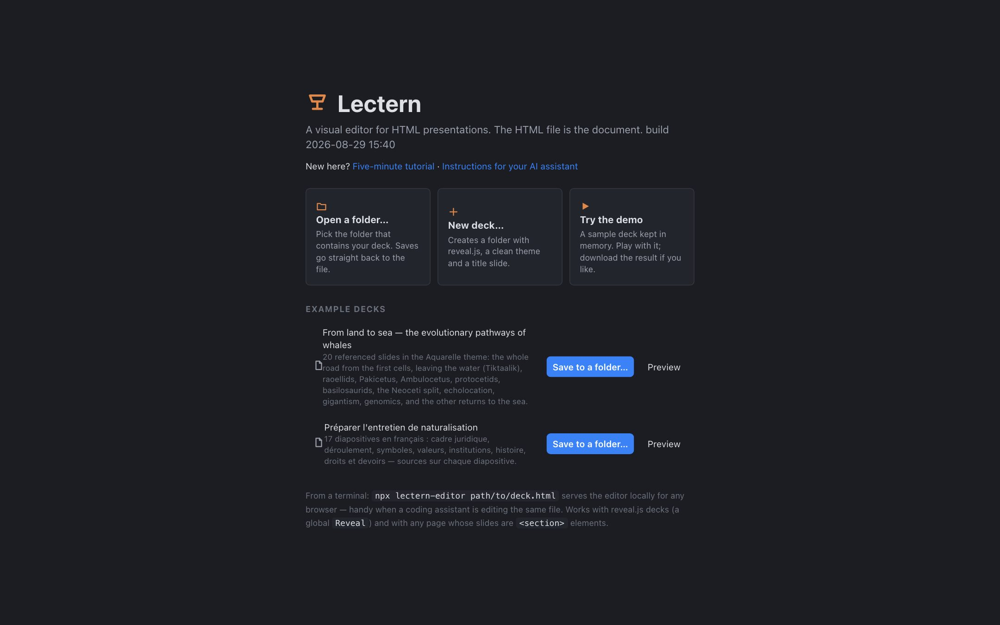
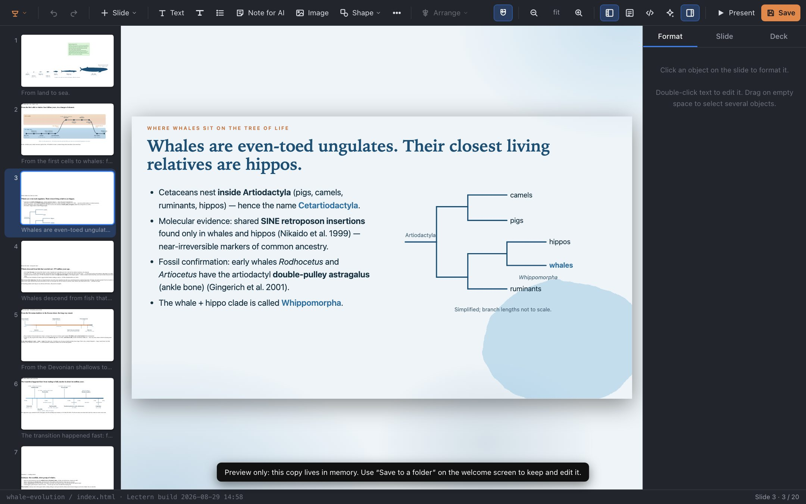
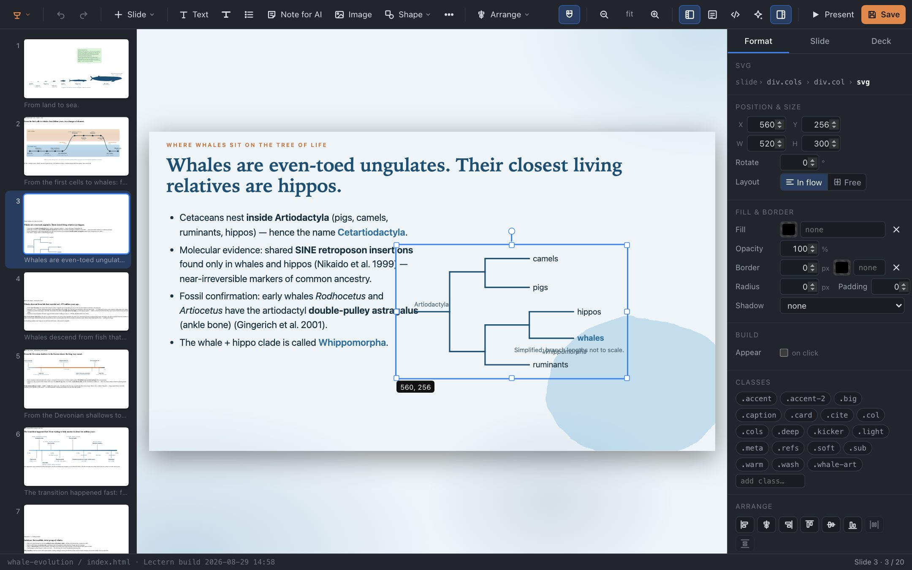
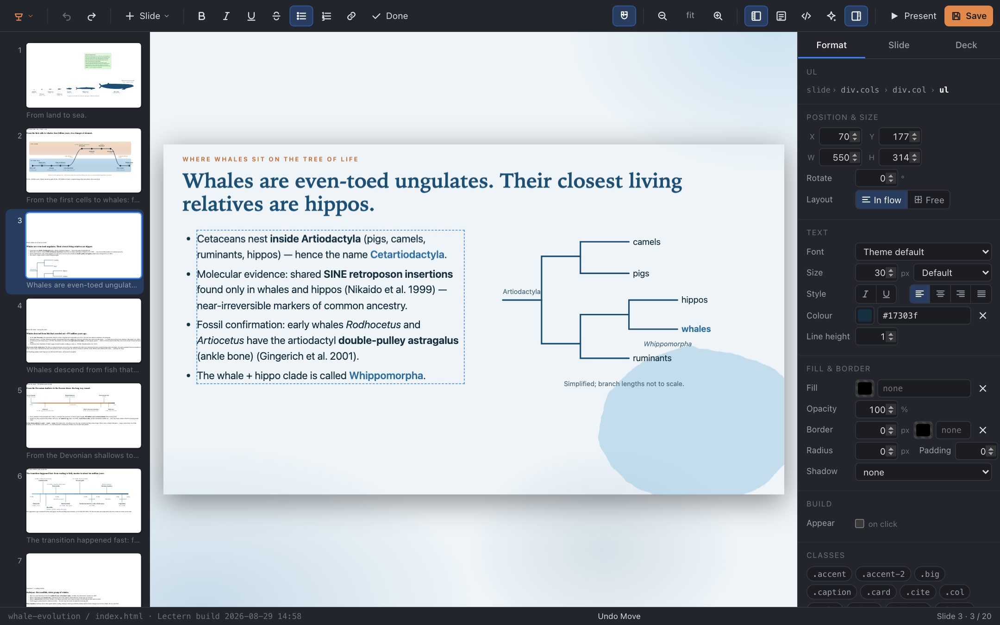
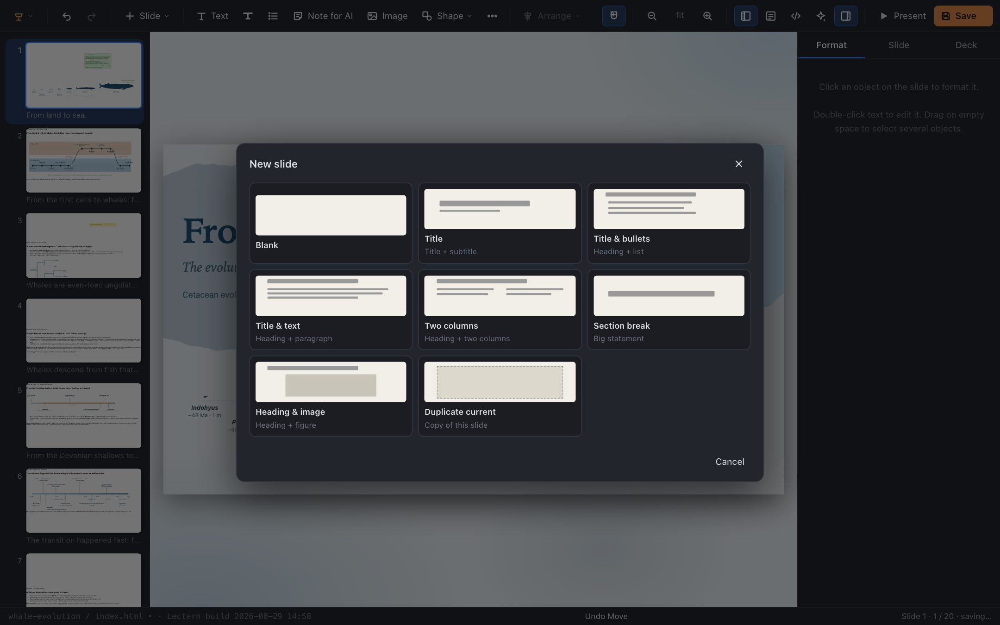
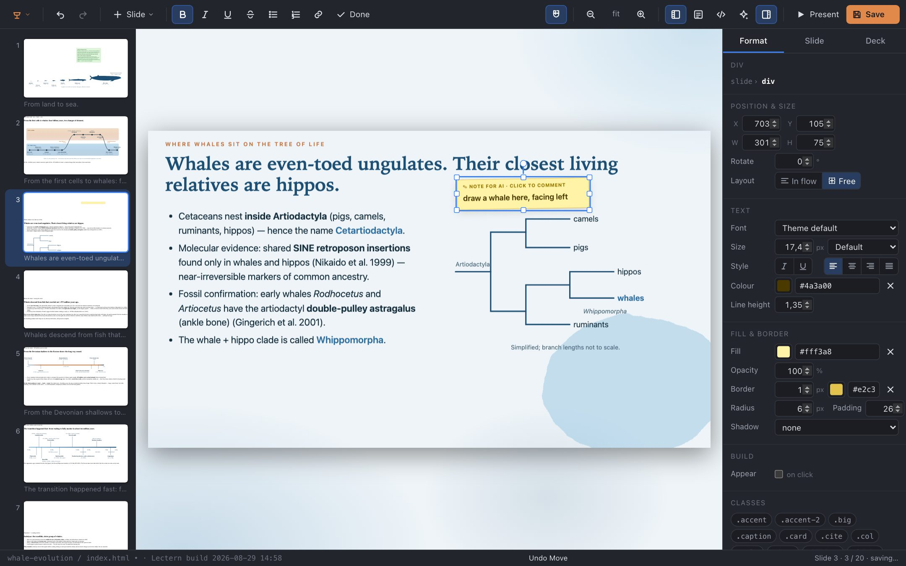
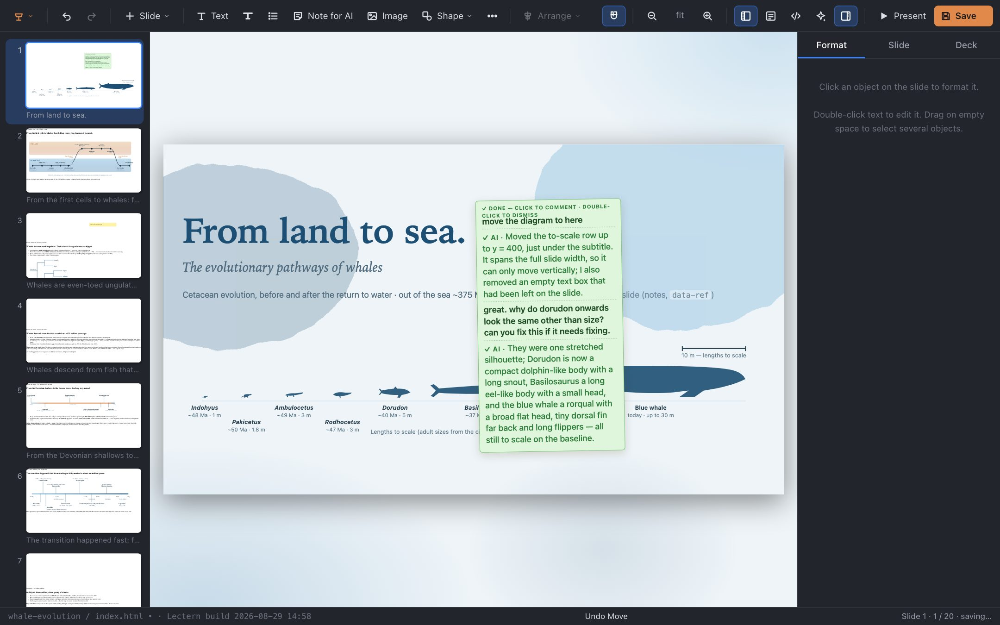

Lectern in five minutes
Lectern edits HTML slide decks the way a desktop presentation app does — click, drag, type — and writes the result straight back into the .html file. If you have used Keynote or PowerPoint, most of it will feel familiar. This page covers the rest, and how to work on a deck together with an AI assistant. Open the editor in another tab and follow along.
- 1 Open a deck
- 2 The screen
- 3 Select & move
- 4 Edit text
- 5 Add slides & objects
- 6 Save & present
- 7 Notes for an AI
- 8 Everything else
1 Open a deck
Three ways in from the welcome screen. Open a folder… picks the folder that holds your deck (Chrome or Edge; nothing is uploaded — the browser reads and writes the files on your disk). New deck… makes a folder with a title slide, a theme and a copy of reveal.js. Preview on an example opens a throw-away copy, which is the quickest way to try things; Save to a folder keeps it.

From a terminal, npx lectern-editor path/to/deck.html serves the editor for any browser, including Firefox and Safari.
2 The screen
Slides down the left, the current slide in the middle, the inspector on the right. The slide is rendered by the deck's own reveal.js and stylesheet, so what you see is what the audience will see. The status bar shows the file you are editing; the toolbar's Present opens the real presentation.

3 Select and move things
Click anything to select it — a heading, a list, an image, a diagram. Handles appear, and the inspector shows its position, size, text and fill. Drag to move it; guides snap to the slide's edges, its centre lines and the edges of other objects (hold ⌥ to ignore them). Drag a handle to resize (images keep their proportions; ⇧ constrains anything). The small circle above the selection rotates. Arrow keys nudge by a pixel, ⇧+arrows by ten.

Two ways an object can sit on a slide, shown as In flow / Free in the inspector. Text laid out by the deck's CSS stays in flow: dragging it nudges it without disturbing anything else. Objects you place by hand — an image, a shape, a caption — are free, at an exact position. Switch either way with the buttons. Drag on empty canvas to select several objects; ⌘A selects everything on the slide; click a selected object again to select its parent (a column, a card).
4 Edit text
Double-click text to edit it in place. The toolbar switches to bold, italic, underline, lists and links (⌘B ⌘I ⌘U ⌘K); Tab indents a list item. Esc or clicking elsewhere finishes. With a text object selected, just typing replaces its text. Maths written as LaTeX stays LaTeX and is typeset again when you finish.

5 Add slides and objects
Slide in the toolbar (or ⌘⇧N) adds a slide from a layout — title, bullets, two columns, section break, image — built from the deck's own classes so it matches the rest. Text, Image and Shape add objects to the current slide; images are copied into the deck folder. The … menu has tables, code, equations and web embeds. ⌘D duplicates, ⌫ deletes, ⌘C/⌘V copy and paste — objects and slides alike.

6 Save and present
⌘S writes the changed slides back into the HTML file — only the changed ones, so the rest of the file stays byte-for-byte as it was. Autosave is on by default (menu ▸ Autosave), so usually you never press it. ⌘Z undoes anything, including across saves. Present opens the deck as the audience will see it; print it to PDF from there with reveal's ?print-pdf if you need a handout.
Because the file is the document, anything else can edit it too: a text editor, git, or an AI assistant. If a file changes on disk while you have no unsaved edits, the canvas reloads by itself and stays on the same slide.
7 Notes for an AI
This is the part that is new. Press N on a slide (or double-click empty canvas) and write, at the spot it concerns, what you want done there: "draw a whale here, facing left", "this is too dense — split it", "add the 1905 law here". The note is a yellow sticky on the canvas, saved in the HTML (hidden when presenting) with its position on the slide.

Now ask your assistant to do the notes. It reads them from the file — npx lectern-editor notes deck.html lists them, and the Notes for AI panel in the toolbar copies a ready-made prompt — does what each asks, and marks it done. The note turns green with the assistant's reply under yours. Click a green note to answer it (it becomes pending again, with the whole thread); double-click to dismiss it once you are happy.

To make an assistant fluent in this — the file format, the deck's classes, the notes protocol — give it AGENTS.md. In Claude Code, install the skill: /plugin marketplace add calumhrmurray/lectern then /plugin install lectern@lectern. For other assistants, paste:
Read https://calumhrmurray.github.io/lectern/AGENTS.md and make me a slide deck about … in a folder called talk.
Then keep Lectern open on that folder. Its edits appear as they happen; yours reach the file a second after you make them.
8 Everything else
- Inspector tabs. Format is the selected object; Slide has the background, transition, speaker notes and the raw HTML of the slide; Deck has the slide size and the deck's classes.
- Classes. The chips at the bottom of the inspector are the deck's own CSS classes (
.kicker,.card,.soft…). One click toggles them — the easiest way to keep new things looking like the old ones. - Fragments. Build ▸ Appear on click makes an object a reveal.js fragment; set the effect and order there.
- Arrange. Align, distribute and z-order for a multi-selection; ⌘] / ⌘[ bring forward / send back.
- Zoom. + − 0, or the toolbar; PgUp/PgDn change slides.
- Multi-file decks (slides pulled in from part files) are edited as one deck and saved back to the right files.
- ? shows the full list of shortcuts.